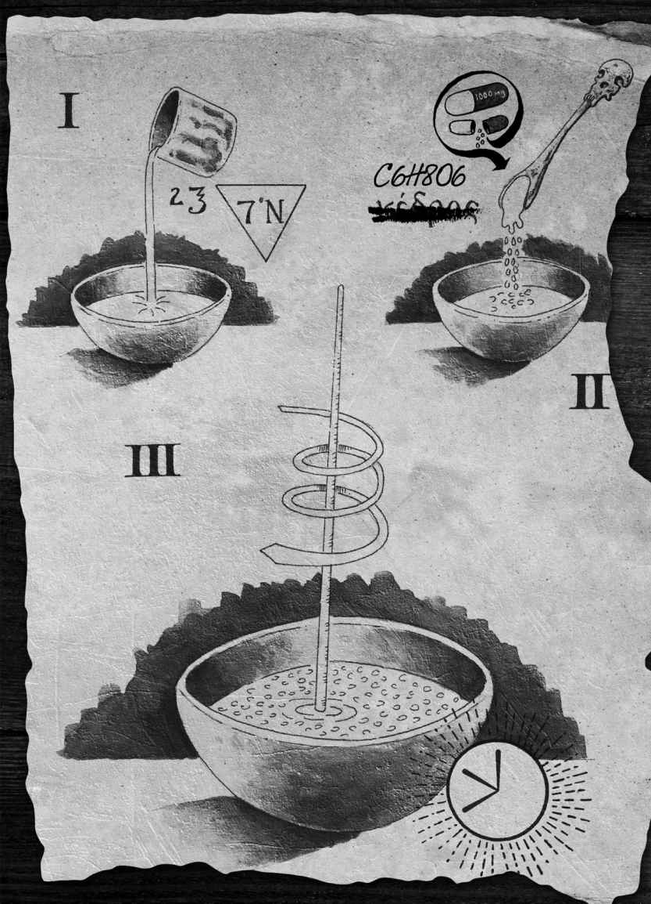
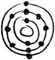

| ＥＮＤＧＡＭＥ ‐ ＴＨＥ ＣＡＬＬＩＮＧ エンドゲーム・コーリング スターターブック | |
| ジェイムズ・フレイ & ニルスジョンソン＝シェルトン | |
| (2014) | |
ENDGAME - THE CALLING
エンドゲーム・コーリング スターターブック
ジェイムズ・フレイ
ニルスジョンソン＝シェルトン
この本の大部分はフィクションだが、記載されている情報の大半は事実。
〈エンドゲーム〉は真実だ。真実が現実になる日は近い。

エンドゲーム
コーリング
〈エンドゲーム 〉がはじまった。未来は白紙のまま。この未来はきみの未来だ。これから何が起こるか、誰にもわからない。
われわれがなぜここにやってきたのか、人はいろんな理由を考えてきた。神の啓 示 を受けた、宇宙人にさらわれてきた、稲 妻 に打たれた、扉を開けたらここにいた、などなど。しかし理由はどうでもいい。重要なのはこの星があり、この世界があり、この地球があるということだ。われわれはここにきて、ここで暮らし、いまもここにいる。人類すべてが、ここにいる。人類が地球で生きることになったはじまりをどう考えようが、そんなことはどうでもいい。だが、エンドはちがう。エンドは重要だ。
This is Endgame.
ここにいるのは12人。肉体は若いが、その血脈は古代から受けつがれてきた。数千年前に選ばれて以来、毎日その準備をしてきた。ゲームがはじまれば、考え、分析し、行動し、殺す。彼らのなかには準備が十分でない者もいる。そして、準備が十分ではない者から先に死んでいく。その意味で、〈エンドゲーム〉はシンプルだが、それだけではすまない。ひとり死ぬたびに、無数の死者が出るからだ。それが〈イベント 〉だ。きみは何十億人もの無 邪 気 な見物人のひとりだ。幸運な敗者であり、不運な勝者だ。きみの運命を決めるこのゲームにおいて、きみは観客のひとりである。
〈プレイヤー 〉はわれわれだ。きみたちの〈プレイヤー〉だ。われわれが、〈プレイ〉する。条件は13歳以上20歳以下であること。それが決まりであり、昔からそう決められてきた。彼らは超自然的な存在ではない。空を飛ぶことも、鉛 を金にすることもできないし、超自然的な治 癒 力 もない。死が訪れれば、死ぬ。彼らは死すべき存在、つまり人間なのだ。地球の後継者である。そして〈大いなる救 済 の謎 〉を解かなくてはならない。誰かひとりが、この謎を解かなくてはならない。さもなければ全員が破滅する。彼らは、結びつけばどんなふうにでもなれる──強 靱 にも、優しくも、無礼にも、忠実にも、賢 しくも、愚 かにも、醜 くも、好 色 にも、意地悪にも、気まぐれにも、美しくも、狡 猾 にも、怠 惰 にも、強くも、弱くも──なれる。
彼らは善 き者であり、悪 しき者である。
きみのように。
きみたちすべてのように。
しかし、彼らが結びつくことはない。彼らは仲間ではない。電話で話すこともなければ、メールを交わすこともない。チャットをすることもなく、いっしょにコーヒーを飲むこともない。別々のところで暮らし、世界中に散らばっている。生まれたときからいままで、用心深く、賢 く、油断なく、狡 猾 に、冷 酷 に、無 慈 悲 になるよう育てられ、訓練を受けてきた。彼らは〈大いなる救済の謎〉を解くためなら手段を選ばない。失敗は許されない。失敗とはすなわち死。失敗とは一切の終わりであり、すべての終わりである。
強靱さが強さをしのぐことがあるだろうか。愚かさが優しさに勝ることがあるだろうか。怠惰が美をくじくことがあるだろうか。勝者は善き者だろうか悪しき者だろうか。確かめる方法はただひとつ。
〈プレイ〉すること。
生きのびること。
謎を解くこと。
未来は白紙だ。これから起こることは誰にもわからない。
だから、聴 いてほしい。
われわれについてきてほしい。
声援を。
希望を。
祈りを。
祈りの力を信じるなら、強く祈ってほしい。
われわれは〈プレイヤー〉。きみたちの〈プレイヤー〉だ。われわれはきみたちのためにプレイする。
共に、〈プレイ〉してほしい。
〈地球〉の人々よ。
〈エンドゲーム〉がはじまった。
マーカス・ロクシアス・メガロス
トルコ イスタンブール アジズ・マフムード ヒュダイー町ハーフィズ アリパサ通り
マーカス・ロクシアス・メガロスは退屈していた。思い出せないくらいほど昔から、うんざりしている。学校にも女の子たちにもサッカーにも。とりわけ、いまは退屈でしょうがない。お気に入りのサッカーチーム、フェネルバフチェは、このままいくとマニサスポルに負けちまう。
マーカスは、飾 り気 のない狭い部屋でテレビを見ながら鼻を鳴らした。しゃれた黒い革張りの椅 子 に座って前かがみになっている。背 筋 をのばすたびに、椅子の革が肌に張りつく。いまは夜だが、部屋の明かりは消していた。窓は開いている。そこから、むっとした外気が熱い幽 霊 のように入りこんでくる。ボスポラス海 峡 から聞こえる、うめき声のような汽笛や鐘 の音がイスタンブールのすみずみに響いていた。
マーカスはだぼだぼの黒い短パンをはき、上半身は裸だった。24本の肋 骨 が日焼けした肌にくっきり浮かび、腕は筋肉質でがっしりしている。呼吸は穏やかだ。腹は引きしまり、髪は黒く五分刈りで、瞳は緑。汗の粒がひとつ、鼻の先に転がりおちた。今夜はイスタンブールのあらゆるものがぬれている。マーカスもぬれて光っていた。
膝 の上に本を開いている。古い革 装 の本でギリシャ語で書かれている。マーカスは開いたページに紙を置いて、英語で書きつけていた──「はばかりながらわたしは広きクレタ島の生まれなのだ。裕 福 な地主の息子だ」。この古い本を何度も読んできた。これは、戦争の、冒険の、裏切りの、愛の、そして死の物語だ。この本を読むといつも頬 がゆるむ。
もし本物の旅ができるんだったら、なんでも差し出すのに。
マーカスはため息をついて紙切れに触れた。もう片方の手には、9,000年前に作られた短刀が握 られている。刃 も柄 も青 銅 製 だ。クレタ島のクノッソスの炉 で鋳 造 されたものだ。マーカスは刃を体の上にすべらせ、右の前 腕 の上に当ててぐっと刃を押しつけた。力をこめすぎることはしない。加減はよくわかっている。この短刀は、手でつかめるようになったときからずっと相棒だった。六歳のときから、いつも枕の下に入れて眠っている。この短刀でニワトリを殺し、ネズミを殺し、犬を殺し、猫を殺し、ブタを殺し、馬を殺し、タカを殺し、仔 羊 を殺した。11人の人間を殺した。
16歳という年齢は、〈プレイ〉に最適だ。20歳になれば資格がなくなる。だからいま、〈プレイ〉したい。資格を失うくらいなら死んだほうがマシだ。
だが、その可能性はゼロに近い。どうしようもない。オデュッセウスとちがって、戦いがこちらを見てくれることはない。
血族は9,000年前から待ちつづけてきた。短刀が作られたその日から待ってた。俺の知るかぎりじゃ、戦いがはじまらなければ血族はさらに9,000年待たなくちゃいけない。俺が死に、この本が形もなくなっちまったあと、さらにはるかその先まで。
テレビから観客の歓声が聞こえ、マーカスは短刀から顔を上げた。フェネルバフチェのキーパーが蹴ったボールが右サイドへ大きく弧を描いていた。それをがっしりした体つきのミッドフィルダーがヘディングする。ボールは前方へ大きく跳ね、ふたりのディフェンダーの頭をこえていった。マニサスポルのキーパーの前にいるディフェンダーは、そのふたりしかいなかった。選手が一斉にボールめがけて走る。フォワードがボールを捕える。ゴールまで20メートル。敵はひとりもいない。キーパーがみがまえた。
マーカスは椅子の上で身を乗り出した。試合時間は83分34秒。フェネルバフチェはまだ一度も得点していないが、土壇場で一点取ればまだ面目も立つ。古い本が床に落ちた。ページの上からすべり落ちた紙切れが、木の葉のように舞う。観客が立ち上がりはじめた。ふいに夜空が明るくなった。まるで神々が、天空の神々が、応援に降りてきたかのようだ。キーパーがあとずさる。フォワードは気持ちを落ちつかせて蹴った。ボールが飛んでいく。
ボールがゴールのネットに飛びこむのを待っていたかのように、スタジアムが閃光に包まれ、観客は叫び声をあげた。ゴールの歓声は、一瞬にして恐怖と驚 愕 の悲鳴に変わった──腹の底から噴きあげてくる恐怖と驚愕だ。巨大な火の玉、燃えさかる隕 石 が、観客席の上で爆発し、ピッチに降りそそいだ。フェネルバフチェのディフェンダーが閃光に呑みこまれるように姿を消し、スタジアムの特別観覧席の後ろに大きな穴が開いた。
マーカスは目を見張った。マジかよ！
これほど美しい光景は見たことがない。
テレビには火の海と化したスタジアムが映っている。選手、警察、観客、コーチ。誰も彼もが火だるまとなって走りまわる様子は、気の触れたネズミ花火みたいにみえた。解説者たちが助けを求めて叫び、神にすがって叫んだ。なにが起こったのか理解できないのだ。まだ死んでいない者たち、これから死のうとする者たちは、逃げようとしては倒れこみ、互いの体を踏みつけた。そのとき二度目の爆発が起こり、テレビの画面は真っ黒になった。
マーカスの胸は高鳴った。頭が、あのスタジアムくらい熱くなっている。腹には石と硫 酸 が詰 まっているみたいだ。手のひらは熱くベタついている。ふと下を見ると、いつのまにか古い短刀が前腕に食いこんでいた。血が細い筋となって手のほうに流れ、椅子と本に滴 り落ちている。
暗くなったテレビの画面を振り返る。あの残 骸 のただ中で、なにかが俺を待っている。それを探すんだ。
ひとつのピースを。俺のため、そして俺の血族のために。
マーカスはにっと笑った。生まれてからいままで、この瞬間のためにずっと訓練をつづけてきた。訓練をしていないときは、〈召喚 〉の時がくるのを夢みていた。いろんな惨事を想像してきたが、今夜この目でみたものとは比べ物にならない。隕石はサッカースタジアムを破壊し、38,676人の死者を出した。血族には、いずれ壮麗な告知がもたらされるだろう、という言い伝えがあった。今夜はじめて、その言い伝えは美しい現実になったのだ。
俺は人生のすべてをかけてエンドゲームを待ちのぞみ、準備をしてきた。もう、退屈なんかじゃない。二度と退屈することはない。勝つまでは。あるいは死ぬまでは。
時がきた。マーカスにはわかっていた。時がきたんだ。
竹田千代子
日本 沖縄 那覇〈果無通り〉22B
鈴の鳴る小さな音が三度響 き、竹 田 千 代 子 は目を覚ました。首を曲げると、デジタル時計は5:24を表示していた。その数字を、千代子は書き留めた。いま、この数字は意味を帯びることになった。重要な意味を。きっと、ほかの人たちも自分と同じように、11:03や9:11や7:07のような数字を大切に思うようになる。これから死ぬまで、わたしはこの5:24という数字を意識することになるのだ。そして死ぬまで、この数字は重要で、意義深いものであり続ける。
千代子はテーブルの時計から目をそらし、暗闇を見つめた。シーツの上に裸で横たわっている。ふっくらした唇 をなめ、天 井 の闇を食い入るように見る。まるで、なにかメッセージが浮かんでくると期待しているように。
まさか鈴が鳴るなんて。わたしのときに鳴るとは思ってもいなかった。
生まれてからずっと、〈エンドゲーム〉のことも、自分の特殊な先 祖 のことも聞かされてきた。
鈴が鳴るまで、わたしは17歳で、学校には通わず自宅学習をしているはぐれ者で、一流の航海士で、忍耐強く、身のこなしの軽やかな登山家だった。記号や言語に詳しく、暗号解読が得意。抜 刀 術 や捕 縄 、暗 器 を自在に操 る暗殺者でもあった。鈴が鳴ったいま、いきなり100歳に、1,000歳に、10,000歳になったように感じる。一秒ごとに年を取る気がする。何世紀もの重みがのしかかってきたような感覚。
目を閉じると闇が戻ってきた。どこか別の場所へいってしまいたい。洞 窟 か、水の中か、それとも地球で一番古い森へ。でも、ここにいて、この現実に慣れなくてはならない。じきに、闇はいたるところに忍びこみ、誰もがそれに気づく。わたしは、闇を意のままに操れるようにならなくてはならない。闇と親しくなり、それを愛 でるのだ。準備をはじめて17年が経 ったいま、心 構 えはできている。それを望んだことも求めたこともないのだとしても。闇。きっとそれは心地のいい静 寂 のようなものでしょう。それならよく知っている。静寂はわたしの一部なのだから。
千代子は、聴 覚 はあるが言葉を発 することはできない。
部屋のふすまをそっとたたく音がした。千代子はほっそりした背をふすまのほうにむけ、ベッドの上で上半身を起こして座った。床の上で二度、足を踏み鳴らす。入っていいという合図だ。
ふすまの下 桟 の木が敷 居 の上を滑 る音がする。その音が止 むと、すり足で進む音がした。
「鈴を鳴らしました」千代子のおじがいった。床近くまで頭を下げている。若き〈プレイヤー〉には最高の敬意が払われる。それが慣例であり、それがルールだった。「鳴らさなくてはならなかったのです」おじが続ける。「彼らが近づいています」
おじは床に視線を落としたままだった。「お気の毒ですが、時がきました」
千代子は不規則なリズムで五度、足を踏み鳴らした。わかってる。水を一杯持ってきて 。
「かしこまりました」おじは部屋を出ていき、そっとその場を去った。
千代子は立ち、もう一度空気の匂 いをかぐと、窓辺に近づいた。街の明かりが、千代子の青白い体をぼんやり包む。那 覇 の市街をながめた。公園、病院、港。海はまだ黒く、広大で、静かだ。弱い風が吹いている。窓の下から、ヤシの葉が風にそよぐ音が聴こえてくる。低く垂れこめた灰色の雲が光りはじめた。まるで、宇宙船が近づいてでもいるかのようだ。もう年を取った人たちは起きているころね 千代子は考えた。お年寄りは早起きだもの 。お茶を飲み、ごはんとカブの漬け物を食べている。卵と魚を食べ、温めた牛乳を飲んでいるだろう。中には戦争を覚えている人もいるだろう。空から降ってきた火がすべてを破壊し、大勢の人を殺した。だがあのとき、再生は可能だった。これから起きようとしている出来事は、お年寄りたちにその時のことを思いださせるでしょう。だけど、再生はありえるかしら。彼らの命運も未来も、すべてわたしにかかっている。
犬が一匹、狂ったように吠 えはじめた。鳥たちがわめきたてる。
空がまばゆいばかりに明るくなり、雲の下のほうが割れたかと思うと、巨大な火の玉が街の外 れの上空に出現した。火の玉はうなりをあげて燃えながら、港につっこんだ。大爆発と熱気の波を受けて、早朝の街がギラギラ輝く。砂ぼこり、岩、プラスチック、金属の雨が、那覇の上空に勢いよく噴きあげられた。木々は死んだ。魚も死んだ。子どもたちが、夢が、未来が死んだ。幸運な者は眠ったまま死んだ。不運な者は大やけどや大けがを負った。
はじめのうち、人々は地震が起こったのだと思った。だが、彼らはやがて知るだろう。これはまだ序 の口 なのだ。
がれきが、町のいたるところに降りそそいでいた。千代子は、自分が受け取るべきものが、こちらへむかってくるのを感じた。窓辺から大きく一歩離れる。その瞬間、大きな魚のような形をした赤々と光る燃えさしがひとつ飛んできて、足元に落ち、畳 を焦 がして穴を開けた。
おじがまた引き戸をたたき、千代子は二度足を踏みならした。入っていいわ 。引き戸はさっきから開いたままだ。おじは視線を床に落としたまま千代子に近づくと、正 絹 の青い着物を差し出した。千代子が着物に身を包むと、おじは、氷のように冷たい水を入れたグラスを差し出した。千代子は水を燃えさしにかけた。しゅうしゅう音を立てながら蒸気が立ちのぼり、水は一瞬にで蒸 発 した。あとに残ったのは、黒く輝くぎざぎざの石だった。
千代子はおじを見た。おじは千代子を見た。悲しげな目だ。それは、これまでに費 やされてきた何世紀という時間が、多くの人々の生が、はじまりという名の終わりを迎えたことへの悲しみだった。千代子は感謝をこめて、小さく頭を下げた。おじはほほえもうとした。かつては彼も千代子と同じように、〈エンドゲーム〉がはじまるのを待っていた。だが、〈エンドゲーム〉はおじを選ばなかった。何千年も大勢の者たちを選ばなかったように。だが、千代子はちがう。
「悲しいことだ」おじはいった。「お前も、わたしたちも、誰もが気の毒だ。これから起こることは誰にもわからない」
セアラ・アロペイ
アメリカ合衆国 ネブラスカ州オマハ ブライアン高校
校長がほほ笑みながら立ち上がり、列 席 者 を見渡した。「ここで卒業生総 代 を紹介できることは大変光栄です。セアラ・アロペイ！」
生徒たちが歓声をあげ、拍手し、口笛を吹いた。
セアラは立ち上がった。赤い角 帽 をかぶりガウンを着て、胸には総代であることを示す青い帯をななめにかけている。セアラはほほえんだ。今日はずっとにこにこしている。頬が痛いくらいだ。セアラは幸せだった。あとひと月もしないうちに18歳になる。夏のあいだはボリビアで遺 跡 の発掘作業をして過ごす。彼氏のクリストファーも一緒だ。秋になればプリンストンの大学へいく。20歳になればすぐに、自分の人生をスタートできる。
742.43625日後には、晴れて自由の身だ。もう、わたしが選ばれることはなくなる。
セアラは2列目に座っていた。数席むこうには通路があり、隣には3年生のころからの親友のリーナ・スミッソン、四列後ろにはクリストファーがいる。セアラはそっとクリストファーのほうを見た。金髪、黒っぽいひげそりの跡、緑の目。クリストファーはいつも落ちついていて、優しい。学校で一番ハンサムな男の子だ。
クリストファーとは7年生から付き合いはじめた。なにものも、わたしたちを引きはなすことはできない。
クリストファーの家はオマハ一裕福だった。大金持ちの両親というのは、わざわざ仕事先のヨーロッパから戻って実の息子の卒業式に出席する気にはなれないらしい。クリストファーが壇 上 にあがるとき、大声で声援を送るのはうちの家族だろう。クリストファーは私立学校にいくこともできたし、父親と同じ全 寮 制 の学校にいくこともできた。そうしなかったのは、わたしと離れたくなかったから。クリストファーを愛している理由はたくさんあるけど、それも理由のひとつだ。わたしたちはきっと一生一緒にいる。それがわたしの望みだったし、クリストファーも同じ気持ちのはずだ。742.43539日後には、その望みを叶 えられる。
セアラは通路に出た。レイバンのピンクのウェイファーラーをかけている。父親からのクリスマスプレゼントだ。そのサングラスの下には、少し離れぎみの美しい黒い目が隠れている。長いとび色の髪はきゅっとポニーテールにまとめてあった。日に焼けたなめらかな肌は輝いている。ガウンの下の格好は、ほかの女の子たちと同じようなものだ。
でも、同じ卒業生の中で、この重圧に耐えて壇上に上がることができる人が、何人いるかしら？ わたしがいまこれを首にかけているのは、テイトが有資格者だったときの習慣にならったからだ。その習慣は、〈プレイヤー〉から〈プレイヤー〉へと、300世代前から受け継がれてきた。
チェーンから下がっているのは、艶 やかな黒い石だ。6,000年のあいだこの石は、愛、後悔、美、光、悲しみ、死をみてきた。わたしがこのネックレスを付けるようになったのは、テイトがケガを負い、〈血族〉の評 議 会 がわたしを〈プレイヤー〉に指名したときからだった。
当時は14歳で、それ以来この黒い石を肌 身 離さず付けている。いまでは付けていることを忘れるくらい肌になじんでいた。
ステージにむかうと、後ろのほうの席から声援が聞こえてきた。「セアラ！ セアラ！ セアラ！」わたしは笑顔になって振り返り、友人やクラスメート、クリストファー、兄のテイト、そして両親の顔を見た。階段をのぼって壇に上がると、校長のシューメイカー先生が卒業証書を渡してくれた。「あなたがいなくなるなんて寂しいわ、セアラ」
「先生、ずっと離ればなれってわけじゃありませんから。またお目にかかれると思います」
それはないだろう、とミセス・シューメイカーは思っていた。セアラはAより下の成績を取ったことはない。サッカーでも陸上競技でも州の代表選手に選ばれ、SAT では満点を取った。ユーモアがあって親切で、優しく、頼りになり、明らかに、大きなことを成しとげるために生まれてきた人間だった。「みんなに気合いを入れてやりなさい、アロペイ」校長はいった。
セアラはマイクに近づくと、西のほうをむいて自分のクラスメートと校舎を見渡した。319人の生徒の後ろには、緑の葉を茂 らせたオークの木々が一列に並んでいる。太陽が照りつけて暑かったが、気にならなかった。気にしている者は誰もいない。いま、人生のひとつの章が終わりつつあり、これから別の章がはじまろうとしているのだ。誰もが希望に胸をふくらませていた。未来を思い描き、夢を抱き、それを実現したいと願っている。セアラは、この日のために一生懸命スピーチを考えてきた。
前かがみになって咳ばらいをする。「卒業おめでとう。そして、人生で最良の日にようこそ！」
生徒は大歓声をあげ、気の早い数人が角帽を投げあげた。
「スピーチを考えながら」セアラは鼓 動 が速くなるのを感じながら続けた。「ある質問に答えようと決めました。わたしは、すぐにこう考えたんです。『一番多かった質問はなんだったかしら？』少し恥ずかしいのですが、その答えは簡単です。わたしはしょっちゅう、あなたにだって裏の顔があるでしょう？ と聞かれてきたんです！」
どっと笑い声があがった。そのとおりだったからだ。この学校に完 璧 な生徒がいるとしたら、それはわたししかいない。最低でも週一回は誰かに、あなたの秘密はなに？ と聞かれてきた。
「しばらく悩んだあと、答えはとても簡単だと気がつきました。わたしの秘密は、秘密がないということでした」
もちろん嘘だ。大きな秘密がある。信じられないほど大きな秘密がある。その秘密は何千年ものあいだ、血族によって守られてきた。オールAを取り、トロフィーを取り、賞を取り、人気者になるようなことは全部やってきた。でも、それ以上のことをしてきた。みんなには想像もつかないようなことをやってきた。たとえば、氷で火をおこす。素手でオオカミを捕まえて殺す。熱した石炭の上を歩く。丸一週間眠らずにいることも、一マイル先のシカを銃で仕留めることも、九カ国語を話すこともできる。パスポートは五つ持っている。学校のみんなが考えているセアラ・アロペイは学園祭の女王で、典型的なアメリカン・ガールだけど、本当のわたしは、高度な訓練を受けた、地上では並ぶ者なき戦士だ。
「わたしはみなさんが思っているとおりの人間です。わたしが幸せでいられるのは、幸せであることを自分で選んでいるからです。わたしは子どものころ、行動力はさらなる行動力を生むと知りました。勉強をすれば知識が得られ、目をこらせば視界が広がり、怒りを抑えれば逆 上 することもありません。わたしたちは、不幸、落 胆 、惨 事 を避けることはできません。それでも、だからといって、わたしたちに、わたしたち全員に、幸福が訪れないわけではありません。わたしに秘密があるとしたら、自分がどのような人間になりたいのかを自分で選んでいるということです。運命や予定調和は信じていなくても、自分の選択は信じているということです。わたしたちひとりひとりは、自分自身の選択でいまの自分になっているのだと信じているということです。なんであれ、なりたい人間になれる。なんであれ、したいことをできる。どこであれ、いきたいところへいける。世界は、これからの人生は、わたしたちのものです。未来はまだ白紙なのですから、そこに思いのままの未来を描くことができるのです」
会場は水を打ったように静まり返っていた。
「みなさんのむこうには平原が広がっています。わたしたちの祖先の土地ですが、本当は全人類の祖先から受けついだ土地です。山脈のむこうには海が、生命の源 があります。その生命は──」
セアラの声は、頭上に響いた衝撃音にさえぎられた。人々がいっせいに首をのばす。オークの木々の上に光の筋があらわれ、青空に傷のような跡をつけていた。動いているようには見えない。ただ、大きくなっていく。少しのあいだ、誰もが呆 気 に取られて光を見つめていた。あちこちから、息を呑 む音が聞こえる。誰かがはっきりとこういった。「あれはなんだ？」
誰もが見つめる中、後列からひとつの悲鳴があがり、たちまち会場の全員を恐怖に叩きこんだ。まるで、パニックを起こすスイッチがオンになったかのようだった。椅子が倒れる音と悲鳴が響き、大混乱になった。セアラは息を呑んだ。本能的にガウンの中に手を差しこみ、首にかけた石をつかむ。
石はこれまで以上に重くなっていた。小惑星か隕石か彗 星 か、その正体がなんであれ、それがこの石を変化させているのだ。セアラは凍りついた。自分のほうへむかってくる光の筋から目を離すことができない。チェーンの石がふたたび変化し、ふいに軽くなった。ガウンの中で石が宙に浮きはじめている。石はガウンからすり抜け、会場へむかってくるもののほうへ吸い寄せられている。
これって、まるで。
この感じって、まるで。
〈エンドゲーム〉のよう。
にわかに、悲鳴や物音が耳に届かなくなり、完璧な静寂に包まれた。
人生のほぼすべてをこのための訓練に捧 げてきたというのに、現実になるとは夢にも思っていなかった。
現実になりませんように、と願ってきた。あと、742.42898日は。
石が首をぐっと引っぱった。
「セアラ！」誰かに腕をつかまれた。火の玉は美しく、恐ろしく、出し抜けに音を発しはじめた。それが燃えさかりながら空中を動く音が聞こえてきた。
「こい！ 急げ！」声の主はクリストファーだった。優しく勇 敢 で、たくましいクリストファーだ。顔は焦りと熱で赤く、目には涙が浮かび、口からつばを飛ばして叫んでいる。ふとみると、階段の下に両親とテイトがいる。
あと数秒。いや、もっと短い。
午前中の空はかげり、暗くなり、そして火の玉は頭上にあった。耐えがたいほど熱い。すくんでしまうような音が響いている。
その瞬間、クリストファーに引っぱられ、セアラはステージから飛び降りた。あたりには、髪の毛や木、プラスチックの焼ける臭 いが充 満 している。ネックレスが隕石のほうへ強く引っぱられ、チェーンが首に食いこんだ。
ふたりは目を閉じたまま、芝生の上に倒れこんだ。石が首から離れたのがわかった。石は隕石にむかって宙を漂 っていく。最後の瞬間、巨大な火の玉は針路を変えた。千フィート手前でぴたりと止まり、静かな湖面を跳ねていく平らな小石のように、彼女の上を飛びこえていったのだ。一瞬のできごとで、なにがどうなったのか誰にもわからなかった。だがどうしたわけか、なんらかの方法で、なんらかの理由で、古代の小石はセアラたちを救ってくれた。
隕石はコンクリートの特別観覧席の上を過ぎ、東へ四分の一マイルほどの場所に落ちた。そこには校舎と駐車場、バスケットボールのコートやテニスコートがある。
そのすべてが、消えた。
わたしが人生を──ともかく、普通の人生を──過ごしてきた居心地のいいなじみ深い場所が、一瞬のうちに消えた。すべてが消え去った。たしかに新しい章ははじまったが、それはセアラが望んだものではなかった。
衝撃波が広がって校庭をはらい、あたり一面が土 埃 と闇に包まれた。人々をなぎ倒し、足を払い、昏 倒 させ、鼓 膜 を破った。
空気は熱く、吸いこむと粒 子 で喉が詰まった。灰色、茶、黒が混ざりあっている。目を開けていることもままならない。クリストファーはまだそばにいる。しっかりとこの体をつかんでわたしを守り、きつく抱き寄せていてくれる。石や土、正体不明のこぶし大の塊 が雨あられと降りそそいでいた。まわりには、負傷者も含めてほかの人々がいた。咳 きこんでいる人、悲鳴を抑えられない人、体の震 えを抑えられない人。息をするのも難しい。次の衝撃波があたりを襲い、倒れていた人々の体をさらに強く地面に押しつけた。一瞬、息ができなくなった。いまにも消えそうな太陽の光が幾筋も差しこんで土埃を照らしている。地面が震えるたびに、あたりに物が落ちてくる。コンクリートや鉄の大きなかたまり、ねじ曲がった車、部品。できるのは、じっとして、上になにも落ちてきませんようにと願うことだけだった。クリストファーは痛いくらいの力をこめてセアラを抱きしめていた。セアラの爪は彼の背に食いこんでいる。
どれくらいの時間が過ぎたのかはわからなかったが、やがて視界が晴れはじめ、小さな音が聞こえてきた。あちこちから苦痛にすすり泣く声や、名前を呼ぶ声が聞こえてくる。セアラと呼ぶ声も聞こえる。
父親だ。
「セアラ。セアラ！」
「ここよ！」大声で返事をした。自分の声さえくぐもって遠く聞こえた。まだ耳鳴りが激しい。「ここにいるわ！」
父親が土埃の中から現れた。顔は血と灰にまみれ、白目の部分だけが目立っていた。父親は、わたしが知っているということを知っていた。
〈エンドゲーム〉だ。
「セアラ！」父親は足をもつれさせながら近づいてくると、両 膝 をついてわたしとクリストファーを抱きしめた。わたしたちは泣きながら震えていた。どちらをむいても人々が叫んでいる。一瞬目を開けたとき、すぐそばに親友のリーナがいることに気づいた。ショックで放心状態になっている。リーナの左腕はひじから先がなくなっていた。残っているのは血と、ずたずたになった皮膚と、ギザギザの骨だけだ。卒業式のガウンはぼろぼろにちぎれているが、帽子だけは頭の上に残っていた。全身煤 だらけだ。わたしは叫んだ。
「リーナ！ リーナ！」でも、聞こえていないようだった。リーナはふたたび砂埃の中に姿を消した。もう、二度と会えないだろう。
「ママはどこ？」父親の耳元で、消えいりそうな声で聞く。
「さっきまで一緒だったんだが、見失ってしまった」
「あの石。あれが......あれが......」
「ああ、わかってる」
「セアラ？」母親の声がした。
「こっち！」三人は一斉に返事をした。
母親が這 うようにして近づいてきた。右側の髪はごっそりなくなっている。顔はやけどを負っているが、そこまでひどくはない。わたしたちをみつけると、母親はぱっとうれしそうな顔になった。だがその表情は、さっきわたしがステージにむかう途中で見たときとはちがう。『そう、わたしはスピーチをしていた』わたしは思い出した。『卒業式でスピーチをしていた。みんな幸せそうだった。すごく幸せそうだった』
「オロワ」父親は静かな声で母親を呼び、手をのばした。「テイトは？」
母親は首を振った。「わからない」
遠くで爆発が起こった。
視界が澄 んでくると、虐 殺 の跡がよりはっきりみえるようになった。いたるところに死体が転がっている。セアラの一家とクリストファーは幸運だったのだ。人の頭部が落ちている。脚も、胴体も。
「セアラ、あれだ。あれが現実になった」
声の主はテイトだった。こちらに歩きながら、両手を前に差し出している。片手はこぶしを握り、もう片方の手にはグレープフルーツくらいの大きさの金と緑の石を握っている。石には黒い金属の筋が血管のように走っていた。
テイトの体は全身驚 くほどきれいで、さっきの惨事が彼だけを通り過ぎていったかのように見えた。だが、ほほえんだ口は血だらけだ。テイトはかつて〈プレイヤー〉だったが、いまはちがう。いまの彼は、妹の運命に胸を躍 らせているように見えた。まわりで起こっていることが目に入っていないようだ。死、そして荒廃。わたしたちの知っていることすべてが、これから起ころうとしている。
「見つけたぞ！」テイトはいま、わたしたちから10フィートほどのところにいた。どこかで、また小さな爆発が起こった。テイトは握っていたこぶしを開き、さっきまでわたしの首にかかっていた小さな石を、金と緑の大きな石にはめこんだ。「ほら、ぴったりだ」
「〈ヌクミ〉」父親が崇 めるようにいった。
「〈ヌクミ〉」わたしの声は、父親の口調にくらべると乾いていた。
「なんだって？」クリストファーが尋 ねる。
「なんでも──」
だがその声をさえぎるようにどこかで爆発が起こり、無数の金属片が宙に散らばって飛んできた。次の瞬間、六フィートの鉄骨がテイトの胸の真ん中に突き刺さった。テイトは一瞬で絶 命 した。後ろに倒れこんだとき、その手にはわたしのネックレスの石と、筋の走る緑の石が握られていた。母親が悲鳴をあげた。父親が大声をあげる。「嘘だ！」
声が出なかった。クリストファーは呆 然 と目を見開いている。テイトの胸にじわじわと血の染みが広がっていった。目は開いたまま、生気だけを失って空を見つめている。足がびくっと引きつり、生命の最後の名残 がその体から抜けていった。それでも、緑の石とネックレスの石は無事だった。
これは事故じゃない。あのふたつの石には意味がある。メッセージを運んできたのだ。
〈エンドゲーム〉だ。
ヤゴ・トラロク
ペルー共和国 プーノ県 フリアカ サンタ・エリザ12番地 トラロク邸
ヤゴ・トラロクのスニーカーが、ガラスの破 片 を踏んでじゃりっと音を立てた。夜で、街の明かりは消えている。遠くで物悲しいサイレンが響いているが、それを別にすればフリアカは静まり返っていた。少し前までは大混乱だった。あのときヤゴは、街の中心にできた隕 石 孔 に真っ先にむかい、自分に送られてきたものを手に入れにいった。熱狂の中、生き残った者たちは通りになだれ出ると、店の窓ガラスを破り、ほしいものを奪った。
この地方一帯の元 締 めの立場にあるおやじは略 奪 に渋い顔をするだろう。だがそいつらを責める気にはなれない。いまくらい、ささやかなお楽しみをさせてやってもいい。時間があるうちは。ヤゴは宝物を手に入れた。その石はまだ温かく、肩にかけた小型のかばんの中にしまってある。
熱い風が建物のあいだを吹き抜け、灰と火のにおいを運んでいった。フリアカはペルーの風の街と呼ばれているが、それはこの都にぴったりの名前だ。ほかの連中とはちがって、ヤゴは市 境 をこえ、ずっと遠くまで旅をしたことがある。すべての大陸で少なくとも二度ずつは人を殺してきたが、いまでも風のない土地へいくと奇妙な感じに襲われた。
ヤゴは第21番目の血族に属している。父親のギタレッロと母親のハユ・マルカのあいだに、およそ19年前に生まれた。歳は離れているが、ふたりともかつては〈プレイヤー〉で、いまはこの街の一部を配下に置いている。合法的な商売から、近隣の裏路地で出回っている不法物まで、ふたりはあらゆることにかかわっていた。彼らはある意味では博愛主義者でもあった。不正に得た大金を学校を開くために使うこともあれば、病院の維持費に回すこともあった。法がふたりを取り締まることはない。近寄ることさえしないのだ。トラロク一家は、あまりにも強大な力を持っていた。あと数ヵ月すればヤゴは"資格"を失い、両親の家業に加わることになっていた。だが、あらゆる帝国は崩壊するものだ。
近くの路地から、影が三つひっそりと現れた。ヤゴが歩いていた歩道に立ちはだかった三人は、オオカミのように危険にみえた。
「お前、なにを隠してる？」ひとりが抑えた声で鋭くいい、ヤゴのかばんをあごで指した。
返事の代わりにヤゴは歯を見せた。歯並びは完璧で真っ白だ。上の門歯ふたつにはそれぞれ金がかぶせられ、小さなダイヤモンドがひとつずつ埋めこまれている。宝石が月の光を浴びて輝いた。
三人の不良はたじろいだ。「フェオ。悪かった」リーダー格の男がいう。「あんただとは気づかなかったんだ」
そう、お前たちは脅 えるべきだ。だが、脅える相手はヤゴでもなければ、ヤゴの家族の権力でもない。ヤゴは強く残 忍 で、家族は輪をかけて強く残忍だが、彼らが脅えるべきなのは、これから起ころうとしていることのほうだ。本人たちはわかっていないが、彼らに残された唯一の希望はヤゴだけだ。これまでヤゴの家族には、この街を統制して人々の命を守り、幸福にしておくだけの権力があった。いま、その責任はヤゴひとりの肩にかかっている。
ヤゴは無言で不良たちのそばを通り過ぎた。11人のほかの〈プレイヤー〉のことを考えていた。彼らは世界中に散らばり、それぞれが自分の隕石を持っている。どんな人間なのだろう。どんな血族の生まれなのだろう。それぞれの血族は、ほかの血族のことは知らない。
〈召 喚 〉の時までは知る術がない。
そしていま、〈召喚〉の時は訪れた。
彼らは自分より強いだろうか？ 賢いだろうか？ 自分より大きな傷を負った者はいるだろうか？
問いの答えはおそらくイエスだが、そんなことは問題ではない。
なぜなら、ヤゴは知っている。俺はほかのやつら全員を殺すことができる。いや、かならず殺す。
バイツァカーン
モンゴル ゴビ砂漠 ウランバートルから222キロ南
バイツァカーンはそれが欲しかった。そして、手に入れるつもりだった。
馬に乗り、ゴビ砂漠を南へ走ってきた。三人の連れのうち双子のいとこのバットとボールドは12歳で、兄のジャレイルは24歳だ。
バイツァカーンは13歳になり、いまでは〈エンドゲーム〉の有資格者だ。
そのことをバイツァカーンは喜んでいた。心から喜んでいた。
隕石は二日前の真夜中に、だだっ広いモンゴルの草原の中心に落ちた。ヤクを飼っている老人たちがそのことをバイツァカーンの祖父のサークバタールに知らせると、手を出せば後悔することになるぞという返事が返ってきた。老人たちはその言葉を信じた。ここの草原の民はみんな、奇妙な出来事が起こると、かならずサークバタールの指示をあおぐ。
だからバイツァカーンは、宇宙から降ってきた石は、誰にも触れられずに自分を待っているはずだと思っていた。
ところが現場まで半マイルという地点まできたとき、少し先のほうに、数人のグループとトヨタの古いハイラックスが見えた。
ジャレイルが鞍袋から真鍮の望遠鏡を取り出して草原を見渡し、低いうなり声をあげた。
「あいつらは？」バイツァカーンはたずねた。
「わからない。一人はロシア帽をかぶってる。別の一人はライフルを持ってる。車には予備のガソリンタンクが三つ。男のひとりはバールによりかかって立ってる。ふたりは地面にかがみこんでる。ライフルを持ってる男は車にむかってるところだ」
「こっちに気づいてんのか？」バットがたずねた。
「いや」ジャレイルは答えた。
「じゃ、あいさつしよう」バイツァカーンはいった。
馬をひと蹴りすると、草原に踊り出る。仲間も後に続いた。隕石のそばにいる男たちが彼らに気づいたが、警戒する様子はない。すぐそばまで近づくと、バイツァカーンは手綱を引き、馬が止まる前に鞍から飛び降りた。
「こんにちは！ なにか見つけたんですか？」男たちに声をかける。
「俺たちな、どうやら流れ星をみつけたみたいなんだ」テルビッシュは仲間を無視していった。
バイツァカーンは革の包みにかがみこんだ。「見せてもらえますか？」
「見たいよな。隕石を見る機会なんて毎日あるわけじゃない」ジャレイルが馬の上からいう。「どうかしたか？」
「石を見たいらしい」テルビッシュがバイツァカーンの顔を見ながらいった。
「断る理由もない」「やった！」バイツァカーンは歓声をあげた。「ジャレイル、見てよこの穴！」
彼の隕石は12人の中では一番小さかった。0.2112メートルにも満たない。一番若い〈プレイヤー〉には、一番小さな隕石があてがわれたのだ。
テルビッシュはにっこり笑った。「俺もお前と同じくらいの年に、隕石をひとつ見つけたんだ。中国との国境の近くだった。ソ連に取りあげられちまったけどな。あの頃はなんでもかんでもあいつらがふんだくっていった」
「それ、聞いたことあります」バイツァカーンは両手をジーンズのポケットに突っこんだ。ジャレイルが馬を降り、音を立てて地面の小石を踏んだ。
テルビッシュは包みのほうにむきなおった。「アルタン、開けてやれよ」
ロシア帽をかぶった男がかがみこみ、仔馬の革の包みを解きはじめた。バイツァカーンがのぞきこむ。小さな靴箱くらいの大きさの黒い金属のかたまりだ。金と青緑の物体が格子模様をつけている。
バイツァカーンはポケットから手を抜くと地面に膝をついた。テルビッシュがそのそばに立つ。
ジャレイルが石を指さしてたずねた。「それ、金なのか？」
バイツァカーンはベストからガムの包みを取り出すと、ひとつ口に放りこんだ。「テルビッシュさん、ちょっと調べてみていいですか？」
テルビッシュは顔をしかめた。「なんだって？」
「調べてみてよ、兄さん」バイツァカーンはいった。
ジャレイルはいわれる前に、すばやく隕石のほうにかがみこんでいた。片手には小さな黒い石が握られている。石にはくっきりしたT字型の穴が無数に刻まれていた。ジャレイルは隕石の下のほうに手のひらを当て、はっと目を見開いた。「ああ、あった」
「風船ガムいります？」バイツァカーンはガムをテルビッシュに差し出す。
車から戻ってきた男は眉をひそめ、ライフルを体の前で構えた。
テルビッシュは首を振った。「いや、けっこう。そろそろいくよ」
バイツァカーンはガムをポケットにしまった。「そうですか」
ジャレイルは、アルタンが石を包みなおそうとすると、そのそばで立ちあがった。
「包まなくていい」命令するような口調でいう。
バールを持った男は鼻を鳴らした。「小生意気なガキめ。本気でこの隕石を持っていくつもりか？」
バイツァカーンはピンク色の風船ガムをふくらませた。顔の上ではじけたガムを唇と舌で口の中に戻す。「まさに、そのとおりです」
テルビッシュはベルトから皮剥ぎ用のナイフを引き抜くと、一歩後ろに下がった。「悪いな、ぼうず。それは無理だ。これは俺たちが最初に見つけた」
「最初に見つけたのはヤクを飼ってる人たちですよ」
「このあたりには誰もいなかった」バールの男がいった。
「ぼくたちが、隕石には近づくなといったからです。あの人たちは従ったほうがいいってわかってた。この石はぼくたちのものなんですから」
「いや」ジャレイルが横からいった。「そいつのものだ」
「お前の？」テルビッシュがいぶかしげに聞きかえした。
「ええ」
「は！」男が、手にしていたバールを武器のようにかまえた。「こんなたわ言はきいたことも──」
ジャレイルがその言葉をさえぎってバールをもぎ取り、尖った先端で力任せに相手の胸骨を突いた。男は息を吸おうと苦しげにあえいだ。.30-06を持った男は銃床を肩に当てたが、引き金を引く前に、首を矢に貫かれていた。
男たちは馬の陰に隠れていたバットの存在を忘れていたのだ。
ロシア帽をかぶったアルタンが隕石の包みを両手で抱えると、ボールドは黒い金属でできた投げ矢を投げた。長さ八インチ、直径半インチほどだ。投げ矢は帽子の片方の耳当てに命中し、頭に数インチめりこんだ。アルタンは倒れて口から泡を吹き、全身を痙攣させながら白目をむいた。
テルビッシュは震えあがった。目の前の光景が信じられなかった。少年たちに背をむけ、トラックめがけて走りだす。
バイツァカーンは短い口笛を吹いた。すぐに、馬が駆けよってくる。バイツァカーンが鞍にとびのって脇腹をけると、馬は数秒でテルビッシュに追いついた。バイツァカーンが手綱をぐっと引くと、馬は後ろ足で立ち、前足をテルビッシュの肩と首に振り下ろした。地面に倒れた男の上で小さく回転し、それから反対まわりにもう一度回転し、テルビッシュの体の上で飛び跳ねる。骨が砕け、テルビッシュの息が浅くなり、やがて止まった。
バイツァカーンが隕石孔に戻ると、バールの男は両足を前に投げだして座っていた。鼻は血まみれで両手は後ろで縛られている。ジャレイルが男の両肘の下にバールを差しこみ、それを引っぱりあげるようにして持っていた。
男がつばを吐いた。「俺たちがなにを──」
バイツァカーンは男の口に手をあてがった。「しーっ」そのままもう片方の手を差し出すと、バットがどこからともなく現れ、ぎらぎら光る長いナイフをその手に握らせた。「しゃべらないで」
「お前たちはなにをしているんだ？」哀れっぽい声だった。
「〈プレイ〉を」バイツァカーンはいった。
「なんだって？ なんのために？」
バイツァカーンはナイフを男の首にあてがい、ゆっくりと引いた。
「これは〈エンドゲーム〉。理由なんていらないんです」

セアラ・アロペイ
アメリカ合衆国 ネブラスカ州オマハ ジェファソン・ストリート55番地 アロペイ邸
セアラは兄の死など望んでいなかったし、親友が緊急治療室で腕を切断されることも望んでいなかったし、学校が消えることも望んでいなかった。クラスメートの大半が死んでしまうことも望んでいなかった。こんなことは、かけらも望んでいなかった。〈プレイヤー〉になんかなりたくなかった。
ひどすぎる。
セアラはリノリウムを張ったテーブルにむかい、両手を組み合わせていた。サイモンとオロワが後ろに立っている。クリストファーは隕石の墜落現場に戻っていた。がれきの下から生存者を助け出す作業を手伝い、彼にできることすべてを手伝っていた。クリストファーは優しい。優しく勇敢で、強い。
クリストファーは、セアラの正体も彼女が負っている使命も知らない。あの隕石がセアラにメッセージを届けるために落ちてきたことも知らなかった。ある意味で、今回の死はすべてセアラの存在によってもたらされたのだ。セアラが〈プレイ〉しなければさらなる死がもたらされるだろう。このゲームに勝たなければ、数百マイル四方、数千マイル四方に住む人々が死ぬだろう。
アロペイ一家はまだショック状態にあった。戦争映画から抜け出してきた役者のような姿をしている。セアラはさっきから押し黙っていた。父親は静かに涙を流していた。母親は起こってしまったことにくじけないように、これから起こることに耐えられるように、気持ちを奮いたたせようとしていた。
複雑な色合いの隕石は、テーブルの上の古い陶 製 の皿にのっている。母親はふたりに、それはパラサイトと呼ばれる物質だと説明した。ニッケルと鉄の合金に近い物質でできた石で、緑の部分はカンラン石とよばれる。小さいが、9.91kgの重量がある。パラサイトには正三角形の穴がひとつ開いている。
セアラの首から飛んでいってアロペイ一家を救った石は、テーブルの上に置かれていた。それはセアラの瞳よりも深い黒色だった。
黒い石のそばにはふちがぎざぎざした黄ばんだ羊 皮 紙 が一枚と、透明な液体の入ったガラスのビーカーが置かれていた。
セアラは石を手に取った。彼らは何年も、この瞬間のことを話してきた。まさかこんなことが現実になるとは思ってもいなかった。それは両親も同じだ。それでもいま、まさにその瞬間が訪れた。手順をひとつひとつ、正しい順序で踏んでいかなくては。幼いころ、まだ有資格者になる前、テイトと一緒にこの儀式を真似して遊んだものだった。子どもだったのだ。ばかみたいに、〈エンドゲーム〉はクールだと思っていた。
だが、それはまったくちがった。
セアラは手の中で石を転がした。石は正四面体だ。正三角形の四面は、隕石の穴にぴったりはまりそうだ。この小さなピラミッド型の石は、見慣れてはいても未知のものだった。どれくらい古いのかもわからないが、アロペイ一家は少なくとも30,000年昔のものだと考えていた。その頃の人間がここまで精 巧 なものを作れる道具を持っていたはずがない。そして、その頃の人間が完璧な正四面体を金属で作れたはずがない。だが、それがここにあるのだ。
手から手へ、手から手へと受け継がれてきた。有史以前に作られた、歴史的な工芸品。歴史があるとさえ思われていなかった時代の、歴史的な工芸品だ。
「はじめなくちゃ」セアラはいった。
これが、そうなのだ。
未来は白紙のまま。
これから起こることは誰にもわからない。
セアラは小さな石を首からはずして隕石の上にかざした──そのとたん、石は手から飛び出し、パラサイトの穴にぴったりと収まった。石と隕石のあいだにあった髪の毛ほどの隙 間 は消えていった。一瞬、なにも起こらなかった。石はあくまでも石のままだった。ところが見守っていると、首にかけていた小石が粉々にくずれ、小石を囲む隕石も深さ3.126インチ分がくずてれた。粉末が混じりあい、舞い上がり、11秒後におさまった。
セアラは儀式の行程を五歳の時に覚えていた。ひとつひとつ、正しい手順を踏まなくてはならない。
羊皮紙に、石の粉をさらさらとこぼしていく。
「アハマ・ムフ・ロペク・テペ 」父親が涙を流しながら小声で唱えた。息子の死を悼 みたかったが、その時間がないこともわかっていた。
セアラが石の粉を平らにならした。
「アハマ・ムフ・ゴベクリ・ム 」そう唱える母親の口調は、夫よりもしっかりしていた。
セアラは粉の上に液体を注いだ。
「アハマ・ジェジェ。アハマン・ケルマ 」両親が声をそろえて唱える。
石の粉から蒸気が立ちのぼり、あたりに酸の臭いがたちこめた。羊皮紙の端が内側に反 り、椀のような形になった。
「アハマン・ジェジェ。アハマン・ケルマ 」両親がふたたび唱える。
セアラは羊皮紙を取りあげ、粉と液体を混ぜあわせた。
液体は蒸発し、石の粉が赤く染まった。
そして、それは現れた。
メッセージだ。
〈召喚〉の時が訪れたのだ。
セアラは印を見つめていた。〈プレイヤー〉になりたいと思ったことはなかったが、子どものころから記号や言語は大好きだった。あらゆる種類の記号や言語を四歳のころから学んできた。
印があるべき場所に動きはじめた。
セアラは、このゲームに勝つためにどこからはじめればいいのか、そしてどのようにはじめればいいのかを伝える数字を見つけた。
兄のことを思い出した。片目を失ったことを理由に〈エンドゲーム〉の参加資格を剥 奪 されたときの兄の様子を。無資格者となってからの数年間は目的もなくぼんやり暮らしていた。訓練を続ける資格を失ったこと、そして、責任が妹に移ってしまったことを心から悲しんでいた。今日の午後、妹のために隕石を見つけた兄はとてもうれしそうだった。そして、自分ではなく妹が〈エンドゲーム〉を〈プレイ〉することを信じられないでいた。わたしはこれから、兄の支えもなく、たったひとりで〈プレイ〉しなければならない。
セアラはリーナと、リーナが失った腕、その顔に浮かんでいた混乱のことを考えた。がれきの下から死体を引きずり出しているクリストファーのことを考えた。
自分のスピーチのことを考えた。「わたしの秘密は、自分がどのような人間になりたいのかを自分で選んでいるということです」選択肢を失くしたいま、その言葉は虚 ろに聞こえた。
セアラは思った。わたしは絶対に、家族や友人たちの死を無 駄 にしない。

12の血族すべての12の〈プレイヤー〉がメッセージを受け取った。
12の血族すべての12の〈プレイヤー〉に〈召喚〉の時が訪れた。
12の血族の12の〈プレイヤー〉は以下に記すとおり──
マーカス・ロクシアス・メガロス 8 〈ミノーン 〉9 16.24歳
ヒラル・イブン・イサ・アル=サルト 30 〈アクスマイト 〉31 18.69歳
この地球に確かなことを知る者は誰もいない
ギザのピラミッド
ナスカの地上絵
モアイ像
ストーンヘンジ
スフィンクス
マチュピチュ
ギョベクリ・テペ
カルナック列石
アラム・ムル
ウルのジッグラト
テオティワカン
アンコール・ワット
プマプンク
兵馬俑
メロエのピラミッド
サクサイワマン
ザンブジェイロの大ドルメン
この地球に知る者は誰もいない。
だが、誰か、なにか、どこかで......。
（文中リンク）
ENDGAME - THE CALLING
エンドゲーム・コーリング スターターブック 電子版
２０１４年12 月 version1.0発行
著者 ジェイムズ・フレイ
ニルス・ジョンソン＝シェルトン
訳者 金原瑞人
発行人 三木浩也
編集人 吉岡勇
編集 上原康仁
発行 株式会社 学研パブリッシング
〒１４１－８４１２ 東京都品川区西五反田２－11 －８
【お問い合わせ】http://ebook.gakken.jp/contact/ （電子出版専用）
© GAKKEN PUBLISHING 2014
本書の無断転載、複製、頒布、公衆送信、翻訳、翻案等を禁じます。
学研の書籍・雑誌についての新刊情報・詳細情報は、以下をご覧ください。
学研出版サイト http://hon.gakken.jp/